Materialpaket Lesespurgeschichten Erdkunde Klasse 8 – Landschaften und Naturräume: 22 Lesespuren mit Rätselaufgaben, dreifach differenziert
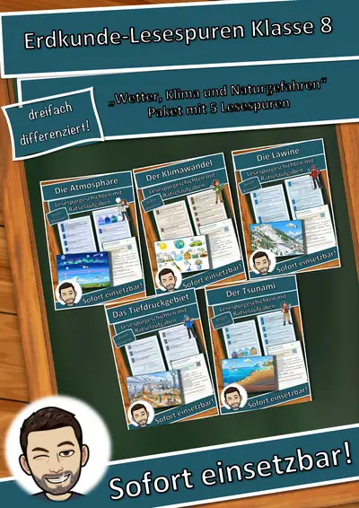
Materialpaket Lesespurgeschichten Erdkunde Klasse 8 – Wetter, Klima und Naturgefahren: 5 Lesespuren mit Rätselaufgaben, dreifach differenziert

Materialpaket Lesespurgeschichten Erdkunde Klasse 8 – Mensch, Wasser und Wirtschaft: 18 Lesespuren mit Rätselaufgaben, dreifach differenziert

Materialpaket Winter und Advent für die 8. Klasse: 10 Lesespurgeschichten mit Rätselaufgaben fächerübergreifend (Polarlichter, Streusalz, Krippenbau & mehr)

Woher kommt mein Spielzeug – die Weltreise eines Spielzeugautos – Lesespurgeschichte mit Rätselaufgaben (Klasse 8)

Das Tiefdruckgebiet – Lesespurgeschichte mit Rätselaufgaben (Klasse 8)

Der Canyon – Lesespurgeschichte mit Rätselaufgaben (Klasse 8)

Die Sanddüne – Lesespurgeschichte mit Rätselaufgaben (Klasse 8)

Die Taiga – Lesespurgeschichte mit Rätselaufgaben (Klasse 8)

Die Erde – Lesespurgeschichte mit Rätselaufgaben (Klasse 8)

Die Tundra – Lesespurgeschichte mit Rätselaufgaben (Klasse 8)

Das Hochgebirge – Lesespurgeschichte mit Rätselaufgaben (Klasse 8)
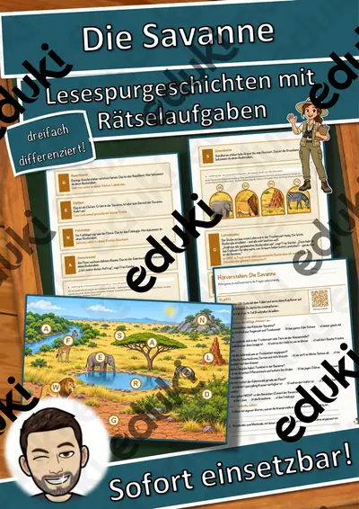
Die Savanne – Lesespurgeschichte mit Rätselaufgaben (Klasse 8)

Der Eisberg – Lesespurgeschichte mit Rätselaufgaben (Klasse 8)

Die Höhle – Lesespurgeschichte mit Rätselaufgaben (Klasse 8)

Der Brunnen – Lesespurgeschichte mit Rätselaufgaben (Klasse 8)

Lesespur: Der Meeresboden – Lesespurgeschichte mit Rätseln (Klasse 8)

Die Oase – Lesespurgeschichte mit Rätselaufgaben (Klasse 8)

Der Braunkohletagebau – Lesespurgeschichte mit Rätselaufgaben (Klasse 8)

Die Lawine – Lesespurgeschichte mit Rätselaufgaben (Klasse 8)

Lesespur: Der Mäander – Lesespurgeschichte mit Rätseln (Klasse 8)
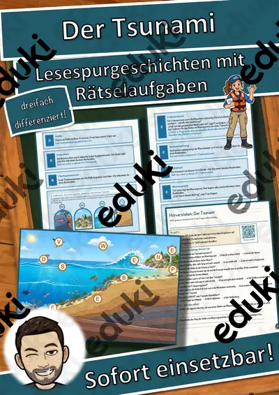
Der Tsunami – Lesespurgeschichte mit Rätselaufgaben (Klasse 8)

Der Wasserturm – Lesespurgeschichte mit Rätselaufgaben (Klasse 8)

Die Tropfsteinhöhle – Lesespurgeschichte mit Rätselaufgaben (Klasse 8)

Lesespur: Die Atmosphäre – Lesespurgeschichte mit Rätseln (Klasse 8)

Der Fjord – Lesespurgeschichte mit Rätselaufgaben (Klasse 8)

Das Hochmoor – Lesespurgeschichte mit Rätselaufgaben (Klasse 8)

Lesespur: Die Schlucht – Lesespurgeschichte mit Rätseln (Klasse 8)

Der Tunnel – Lesespurgeschichte mit Rätselaufgaben (Klasse 8)

Lesespur: Der Steinbruch – Lesespurgeschichte mit Rätseln (Klasse 8)

Das Pumpspeicherkraftwerk – Lesespurgeschichte mit Rätselaufgaben (Klasse 8)

Das Wasserwerk – Lesespurgeschichte mit Rätselaufgaben (Klasse 8)

Lesespur: Das Gewächshaus – Lesespurgeschichte mit Rätseln (Klasse 8)

Lesespur: Das Delta – Lesespurgeschichte mit Rätseln (Klasse 8)

Die Entsalzungsanlage – Lesespurgeschichte mit Rätselaufgaben (Klasse 8)

Der Wasserfall – Lesespurgeschichte mit Rätselaufgaben (Klasse 8)
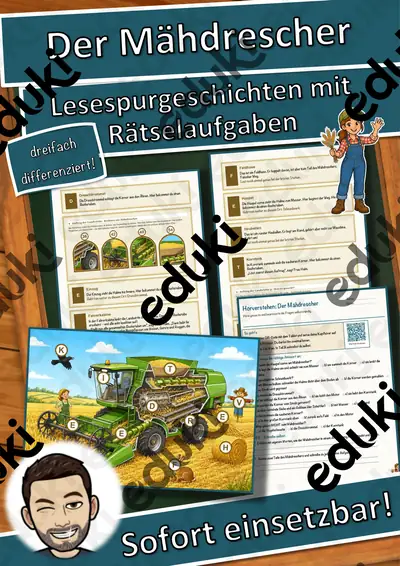
Der Mähdrescher – Lesespurgeschichte mit Rätselaufgaben (Klasse 8)

Lesespur: Die Windmühle – Lesespurgeschichte mit Rätseln (Klasse 8)

Die Wanderdüne – Lesespurgeschichte mit Rätselaufgaben (Klasse 8)

Lesespur: Die Steilküste – Lesespurgeschichte mit Rätseln (Klasse 8)
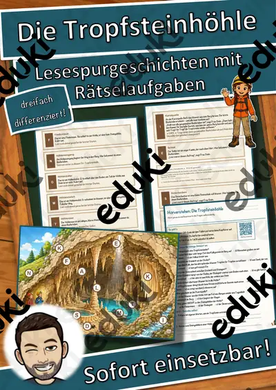
Lesespur: Die Tropfsteinhöhle – Lesespurgeschichte mit Rätseln (Klasse 8)

Der Leuchtturm – Lesespurgeschichte mit Rätselaufgaben (Klasse 8)

Lesespur: Der Deich – Lesespurgeschichte mit Rätseln (Klasse 8)

Die Schleuse – Lesespurgeschichte mit Rätselaufgaben (Klasse 8)

Die Talsperre – Lesespurgeschichte mit Rätselaufgaben (Klasse 8)

Lesespur: Der Geysir – Lesespurgeschichte mit Rätseln (Klasse 8)

Der Fluss – Lesespurgeschichte mit Rätselaufgaben (Klasse 8)

Lesespur: Der Gletscher – Lesespurgeschichte mit Rätseln (Klasse 8)

Lesespur: Der Klimawandel – Lesespurgeschichte mit Rätseln (Klasse 8)

Der Flughafen – Lesespurgeschichte mit Rätselaufgaben (Klasse 8)

Der Hafen – Lesespurgeschichte mit Rätselaufgaben (Klasse 8)
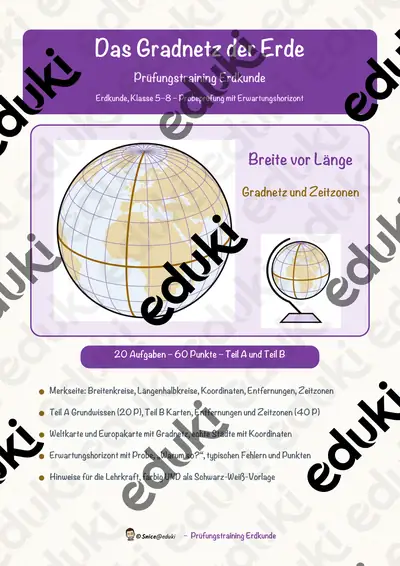
Das Gradnetz der Erde – Prüfungstraining Erdkunde (Klasse 8)
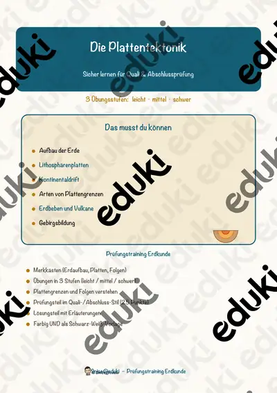
Die Plattentektonik – Prüfungstraining Erdkunde (Klasse 8)
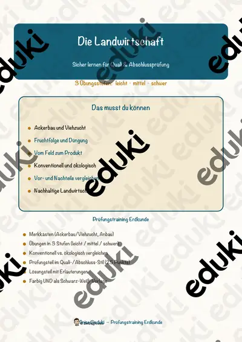
Die Landwirtschaft – Prüfungstraining Erdkunde (Klasse 8)
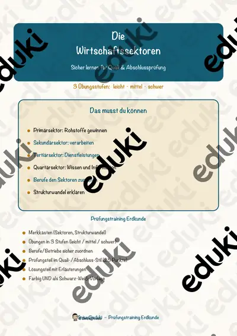
Die Wirtschaftssektoren – Prüfungstraining Erdkunde (Klasse 8)
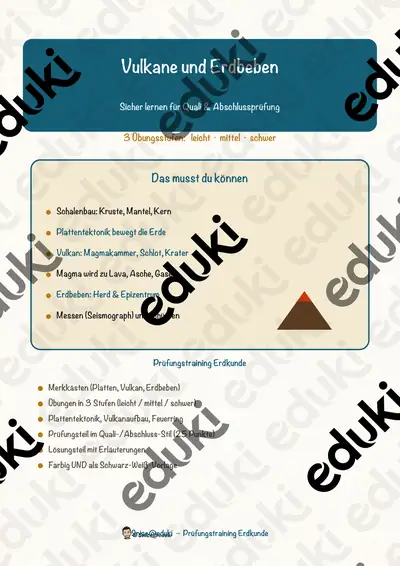
Vulkane und Erdbeben – Prüfungstraining Erdkunde (Klasse 8)
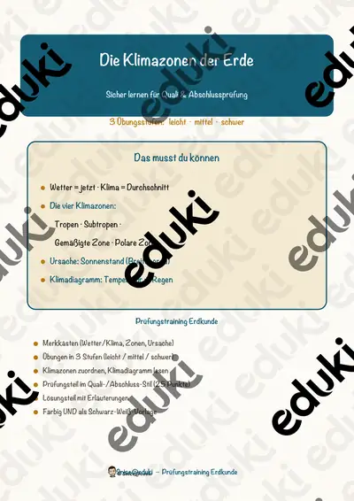
Die Klimazonen der Erde – Prüfungstraining Erdkunde (Klasse 8)

Tornado Lückentext mit Wortspeicher - Naturkatastrophe

Hurrikan Lückentext mit Wortspeicher - Naturkatastrophe

Aargau Lückentext mit Wortspeicher

Naturkatastrophen - Materialpaket - Naturgefahren Naturkatastrophen #Silvesterknaller24 #edukiknaller24 #Glückskekse25

Materialpaket Steckbriefe Länder Europa #demokratiestärken

Steckbrief Europa (Dänemark)

Materialpaket Europa, Europäische Union (auch Homeschooling) Europa

Europa Lernwerkstatt Europa (auch Homeschooling) Europa
Keine Materialien gefunden – versuch einen anderen Suchbegriff oder Filter.